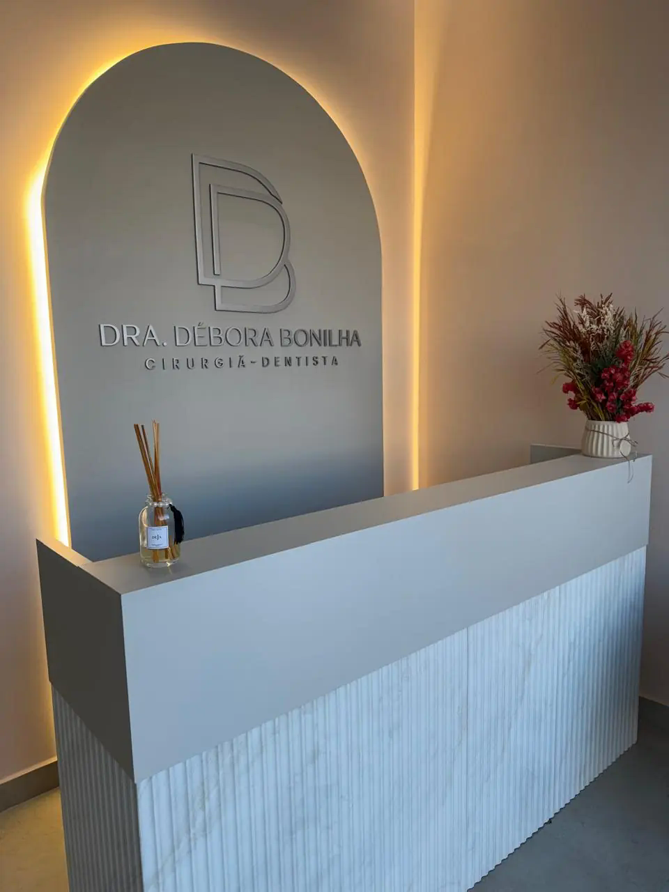
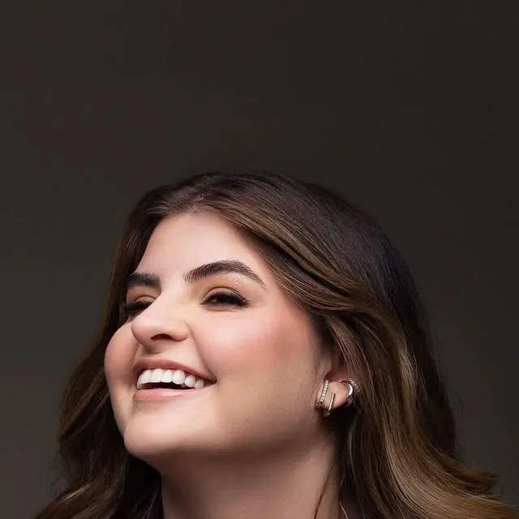
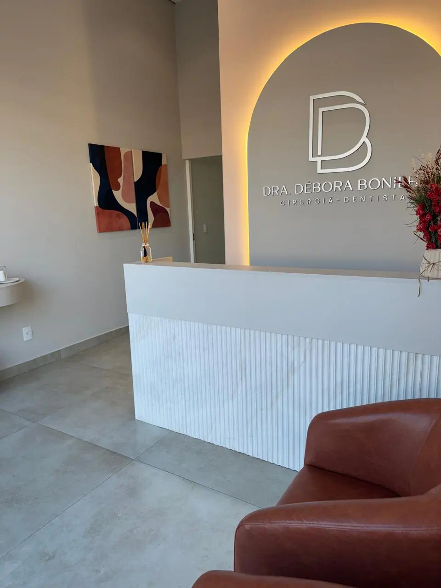
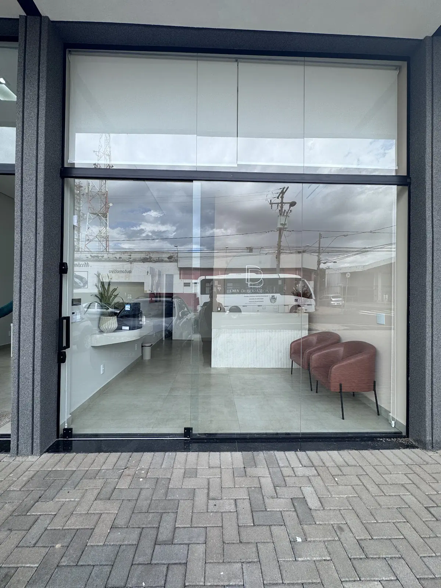

01 / Consultório Odontológico DB · Mirassol/SP
Naturalidade começa pela avaliação.
Dra. Débora Bonilha. Odontologia e estética facial com foco na naturalidade. O cuidado começa pela avaliação e pela conversa sobre cada procedimento.
- Cirurgiã-dentista formada pela UNESP
- CROSP 173410
- Consultório no Centro de Mirassol

02 / Tratamentos
O sorriso e o rosto, no mesmo cuidado.
Avaliação odontológica
O primeiro passo para planejar o seu tratamento.
Limpeza
Cuidado de rotina com a saúde bucal.
Facetas em resina composta
Para harmonizar forma e cor dos dentes.
Clareamento dental
Clareamento realizado em consultório, após avaliação.
Estética facial
Toxina botulínica, preenchimento e bioestimulador de colágeno.
Preenchimento labial
Procedimento com ácido hialurônico divulgado pela Dra. Débora.
Rinomodelação e mento
Procedimentos faciais apresentados pela profissional, com planejamento após avaliação.

03 / Trajetória & cuidado
Um consultório com a identidade de quem cuida
Formada pela UNESP Araçatuba em 2025, a Dra. Débora inaugurou seu consultório em abril de 2026. Seu trabalho une cuidados com o sorriso e estética facial, com foco na naturalidade e no planejamento a partir da avaliação.
- Conversa e explica cada etapa antes do procedimento
- Cuidado com quem tem medo de agulha ou de dentista
- Consultório novo, organizado e aconchegante
- Tratamentos dentários e faciais no mesmo lugar

04 / Seu próximo passo
Vamos conversar?
Mirassol/SP · CEP 15130-063Conversar pelo WhatsApp ↗
Ver mapa do endereço +
| Segunda a sexta | 9h às 19h |
|---|---|
| Sábado | Fechado |
| Domingo | Fechado |
Horários informados no Google. Confirme a disponibilidade pelo WhatsApp.
Cirurgiã-dentista · CROSP 173410 · Mirassol/SP